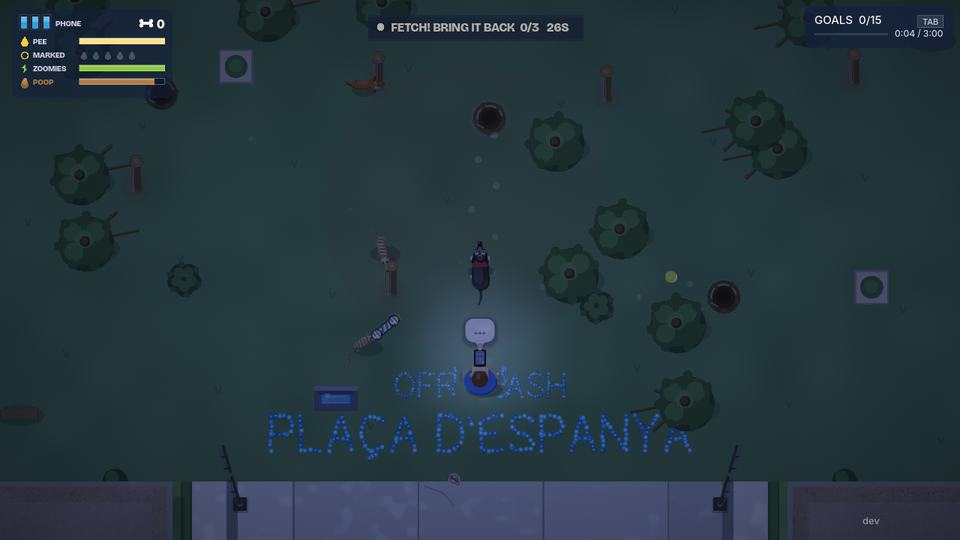

Plaça d'Espanya
Magic fountains below the palace
Montjuïc's grand monumental staircase by night, climbing past the tall brick towers and the Four Columns into the glowing colored pools and illuminated cascades of the Magic Fountain.
- Off-leash stop
- PLAÇA D'ESPANYA (Fenced dog yard)
- Beat the clock
- Under 3:00
Screenshots



Goals (15)
- Mark 5 spots
- Have 4 good long sniffs
- Get the phone home without a scratch
- Get yourself home without a bump
- Get your business bagged
- Bring the ball back 3 times
- Scarf down 2 dropped snacks
- Pop giant soap bubbles from the street performer
- Splash through the Magic Fountain basin
- Wrap the leash around the Four Columns
- Land an x3 trick combo
- Snatch the crystal finial off the cascade
- Spell LEASH
- Find the hidden pernil
- Beat the clock (under 3:00)